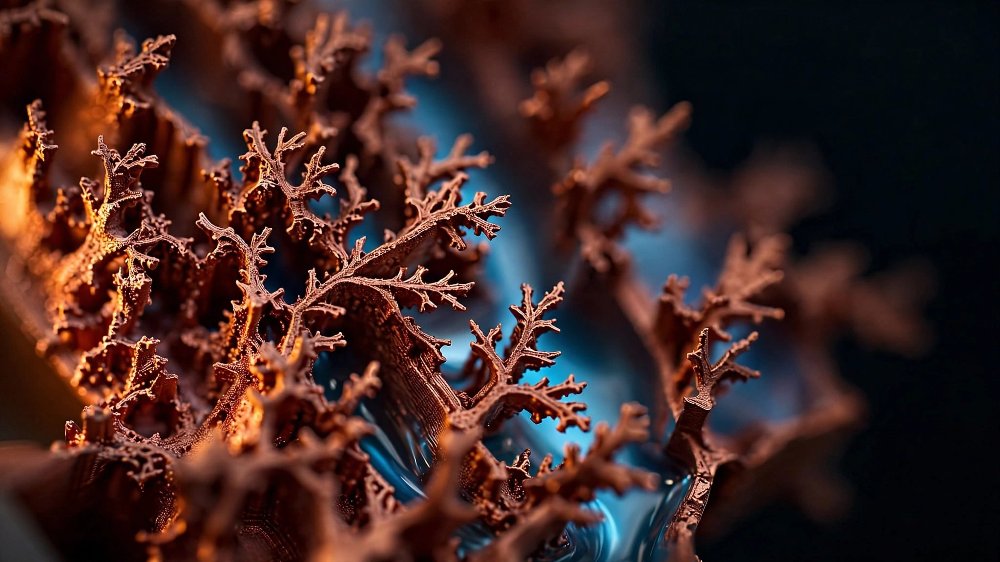

A Data Center Uses 550 Megawatts Just to Stay Cool. A 3D-Printed Copper Plate Cuts That to 11.

Eleven megawatts is all it would take to cool a one-gigawatt data center if you believe the number in a paper published May 7 in Cell Reports Physical Science, compared to the 550 megawatts that conventional air cooling would demand for the same facility, which amounts to a fifty-to-one reduction that, if it holds at production scale, rewrites the operating economics of every hyperscaler buildout currently under construction across the United States.
Researchers at the University of Illinois Urbana-Champaign, led by mechanical engineering professor Nenad Miljkovic and graduate student Behnood Bazmi, achieved the result by rethinking both the geometry and the material of the cold plates that sit directly on processor chips, using a mathematical technique called topology optimization that iterates through thousands of possible fin shapes to converge on one that maximizes heat transfer while minimizing the pumping effort required to push coolant through. What the algorithm settled on looks nothing like the simple rectangular fins found in every commercial cold plate today: jagged, pointed structures with branching tips and tapered profiles, geometries so complex that no conventional machining or laser printing process can reproduce them at the necessary 30-to-50-micrometer scale.
So they turned to a startup. Working with San Diego-based Fabric8Labs, the team employed electrochemical additive manufacturing, known as ECAM, a process that builds fins atom by atom using copper ions in a water-based solution that migrate toward an electrode array borrowed from OLED display technology, depositing pure copper layer by layer at room temperature with 33-micrometer voxel resolution and 99.95% purity. No melting, no metal powder, no post-processing, and no thermal stress. Pure copper conducts heat far better than the aluminum alloys and stainless steel that most cold plate manufacturers rely on, but copper has always been too reflective and too thermally conductive for laser-based 3D printing, a fundamental limitation that ECAM sidesteps entirely by working at ambient temperature with electrochemistry rather than thermal fusion.
What the Lab Actually Measured
The experimental results are specific enough to verify and reproduce independently, which is worth noting because most thermal management claims in this space arrive through marketing decks rather than peer-reviewed journals. Tested on a 2×2 array of gallium nitride transistors across flow rates from 0.06 to 1.25 liters per minute, the topology-optimized cold plate delivered up to 32% lower thermal resistance than conventional pin fins at the same flow rate and simultaneously reduced pressure drop by up to 68% at equal thermal resistance, meaning the pumps consume substantially less energy for identical cooling performance (Bazmi et al., 2026, Figures 4B-4I). At the outlet row, where coolant reaches its highest temperature and thermal performance typically degrades most severely, the optimized plate slashed the inlet-to-outlet penalty by 30 to 39 percent compared to baseline designs, cutting the nonuniformity factor from 1.87 to 1.66.
When the researchers fixed the outlet thermal resistance at 3.1 K/W and compared how much pumping power each design needed to achieve that target, the topology-optimized plate required roughly 60% less energy than the 2mm square-pin baseline and a staggering 98% less than the 1.5mm pins, because pumping power scales with pressure drop and the ECAM plate's flow geometry routes coolant through less-resistant paths while extracting more heat per pass through the branching fin structures that the algorithm discovered.
The Headline Number Is Real but Misleading
Here is the calculation that every outlet ran and none questioned carefully enough. Air-cooled data centers carry a total usage effectiveness, or TUE, of roughly 1.55, meaning 55% overhead above raw compute power with cooling as the largest single contributor at around 30% of total facility energy consumption. Swap in the ECAM cold plates and the paper claims TUE drops to 1.011, just 1.1% overhead, which produces the clean fifty-to-one improvement that generated headlines in outlets from ScienceAlert to Gizmodo within hours of publication.
But it is the wrong baseline, and the error matters more than anyone covering this story has acknowledged. Nobody building a new gigawatt data center in 2026 installs air cooling, because direct liquid cooling from established vendors like CoolIT, Asetek, and Motivair already runs inside AWS, Azure, and the majority of hyperscaler facilities that have come online in the past three years, typically accounting for 5 to 15 percent of facility electricity rather than 30 percent.
Run the honest comparison against the correct baseline and the narrative changes but remains compelling. Existing commercial liquid cooling at a one-gigawatt facility demands somewhere between 50 and 150 megawatts for thermal management, while ECAM plates need only 11 megawatts for the same job, yielding a 4.5 to 13.6 times improvement that is still extraordinary but represents a fundamentally different story from the fifty-fold reduction that propagated uncritically through every major technology publication.
Scale the recalculated numbers to the US grid and they remain worth chasing. American data centers consumed 176 terawatt-hours in 2023, a figure the Department of Energy projects will reach 325 to 580 TWh by 2028, potentially 12% of national grid load (Bazmi et al., citing DOE data). Under current commercial liquid cooling with TUE near 1.10, the cooling share runs between 16 and 87 TWh annually depending on total demand and deployment mix. With ECAM-class plates at TUE 1.011, cooling drops to 3.6 to 6.4 TWh: a net annual savings of 12 to 81 TWh, enough electricity to power between 1.1 and 7.5 million American homes, which is a prize worth engineering effort at either end of the range even though it falls well short of the revolution the headlines promised.
Strongest Counterargument
Fabric8Labs has raised $73.3 million across three funding rounds backed by Intel Capital, NEA, TDK Ventures, and Mark Cuban, which sounds substantial until you consider that the company has shipped zero commercial products as of its last public reporting, making the gap between laboratory demonstration and production-scale deployment the single largest risk in this entire story. The UIUC paper tested a 20-by-20 millimeter cold plate cooling four transistors arranged in a two-centimeter square, but a production server cold plate must cover 100 to 200 millimeters per chip, and a single high-density rack holds dozens of processors each needing its own precisely fabricated copper cooler manufactured to micrometer tolerances without defects. Scaling ECAM from centimeter-scale prototypes to the millions of cold plates that hyperscalers consume annually requires not just additional printers but an entirely new manufacturing supply chain that competes on both unit cost and throughput with the machined-aluminum incumbents who already ship reliably at volume, in a market where CoolIT and Asetek deliver proven solutions today that work well enough that operators must weigh a meaningful but not transformational improvement against the cost and risk of wholesale procurement retooling.
Limitations
Testing was conducted with water at a controlled 22°C ambient temperature, conditions meaningfully more forgiving than the variable thermal loads, warmer coolant return loops, and fluctuating rack densities found in production facilities running real inference workloads. Fabric8Labs' ECAM system achieves 33-micrometer resolution on a 20×20mm test area, but the paper reports neither manufacturing yield nor throughput rate at any scale, and cost-per-plate data is entirely absent from both the publication and the company's public disclosures. The 1.1% TUE figure assumes ideal system-level implementation including pumps, coolant distribution units, and facility piping, all of which introduce real-world losses the model does not capture, and the comparison to air cooling, while technically accurate as the paper frames it, has propagated misleading coverage that overstates the practical improvement for the growing majority of operators who already run liquid.
The Bottom Line
The physics works and the manufacturing innovation is genuine: topology-optimized pure copper cold plates are measurably, reproducibly better than anything on the market by a margin that matters at grid scale, made possible by a 3D printing process that finally renders copper printable at the resolution thermal engineers have needed but never had access to, using feedstock that is recyclable, a process that emits 90% less greenhouse gas than conventional metal printing, and a resolution fine enough to realize geometries that existed only in simulation until this paper demonstrated them in hardware. Against the honest baseline of existing liquid cooling rather than the obsolescent air systems no one is building, the improvement is 5 to 14 times, which still translates to tens of terawatt-hours saved annually at projected 2028 deployment.
If you run a data center or evaluate cooling infrastructure for one, track Fabric8Labs' first commercial shipments and the unit pricing that accompanies them, because the technology's impact depends entirely on whether it can cross the manufacturing gap from lab-scale demonstration to volume production before the next doubling of global compute capacity renders today's cooling infrastructure insufficient regardless of what it is made from. If you read the headlines that say 98%, read the paper too, and check Table S1 for the TUE assumptions. When the real improvement is 5 to 14 times better than the industry's current best, it does not need inflating.